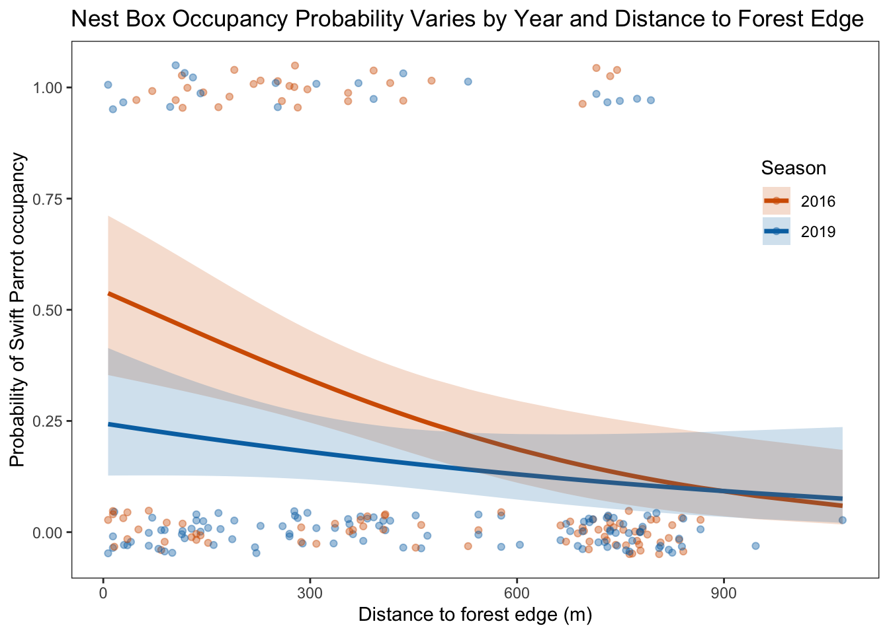

# Reading in pakages
library(tidyverse)
library(janitor)
library(here)
library(DHARMa)
library(readxl)
library(MuMIn)
library(ggplot2)
library(ggeffects)
# Loading in data
sst <- read_csv(
here("data", "sst.csv") # file path
)
nestbox_data <- read_csv(
here("data", "occdist.csv") # file path
)Final
The link to my GitHub repository is here
Setup
Problem 1. Research writing
a. Transparent statistical methods
In part 1, my co-worker used a correlation test, specifically a Pearson’s correlation, to test the linear relationship between distance from headwater and annual total nitrogen load. We know this because of the phrasing “there is no correlation” which indicates that they tested the correlation between these two continuous variables, which knowing the variables are continuous tells us to use a Pearson’s r correlation. In part 2, my co-worker used a Analysis of Variance (ANOVA) test to be able to asses whether there are any statistically significant differences in the average nitrogen load across multiple sources (urban land, atmospheric deposition, fertilizer, wastewater treatment, and grasslands). This is evident because the nature of an ANOVA is that the test compares means across more than two groups, which is suggested by the wording “difference in average nitrogen load between sources”.
b. More information needed
To better interpret the results of the ANOVA in part 2 we should add two additional pieces of information for context. The first is including the effect size, by calculating the Eta squared. The addition of an effect size to the context essentially quantifies the proportion of variance in nitrogen load between the different sources. Ultimately, this helps us determine whether the effect is small, medium, or large, which adds significance to the results. For example, if we got an Eta squared value of 0.20, this would indicate that 20% of the variability in the response can be explained by the source. Additionally, we should also include a post-hoc test, specifically a Tukey’s HSD, because the ANOVA only tells us that at least one group differs, but not specifically which group(s) are significantly different. A Tukey’s HSD compares all possible pairs of group means (e.g. urban land vs. fertilizer, fertilizer vs. grasslands). This helps clarify which specific sources differ in nitrogen load, which is essential for the interpretation of the results. For example, the test may reveal that the fertilizer group and wastewater treatment group nitrogen loads are significantly higher than those from the atmospheric deposition and grasslands.
c. Suggestions for rewriting
Part 1: We found that there is a small/moderate/strong association between distance from headwater (km) and annual total nitrogen load (kg year^-1) (Pearson’s r = correlation coefficient, p = 0.03, $= significance level)
Part 2: We found a small/medium/large difference (Eta squared = effect size value) between sources (urban land, atmospheric deposition, fertilizer, wastewater treatment, and grasslands) in average nitrogen load (one-way ANOVA, F(df, df) = test statistic, p = 0.02, $= significance level) On average, average nitrogen loads in Group A tended to be higher/lower than in Group B (how much higher or lower from Tukey’s HSD, 95% CI [range] kg year^-1), Group C (how much higher or lower from Tukey’s HSD, 95% CI [range] kg year^-1), Group D (how much higher or lower from Tukey’s HSD, 95% CI [range] kg year^-1), and Group E (how much higher or lower from Tukey’s HSD, 95% CI [range] kg year^-1).
Problem 2. Data visualization
a. Cleaning and summarizing
# Creating a clean data frame
sst_clean <- sst |> # starting with sst data frame
clean_names() |> # cleaning column names
rename(mean_monthly_sst = temp) |>
mutate(
date = as.Date(date), # ensures date column is date type
month = format(date, "%b"), # extract month (abbreviated)
year = format(date, "%Y")) |> # extract year
filter(year %in% c("2018", "2019", "2020", "2021", "2022", "2023") # filtering only years 2018-2023
) |>
mutate(
year = factor(year), # convert year to factor
month = factor(month, levels = c("Jan", # ordering months correctly from January to Decemeber
"Feb",
"Mar",
"Apr",
"May",
"Jun",
"Jul",
"Aug",
"Sep",
"Oct",
"Nov",
"Dec"),
ordered = TRUE) # convert month to ordered factor
) |>
group_by(year, month) |>
summarise(
mean_monthly_sst = mean(mean_monthly_sst, na.rm = TRUE), # calculate the average SST for each month-year pair
.groups = "drop") |> # drop grouping after summarizing
select(year, month, mean_monthly_sst) # selecting columns# Display 5 random rows from the cleaned data
sst_clean |>
slice_sample(n = 5)# A tibble: 5 × 3
year month mean_monthly_sst
<fct> <ord> <dbl>
1 2023 Aug 18.5
2 2020 Aug 17.8
3 2020 Jan 14.6
4 2018 Aug 19.6
5 2022 Oct 17.9# Display structure of the cleaned data
str(sst_clean)tibble [72 × 3] (S3: tbl_df/tbl/data.frame)
$ year : Factor w/ 6 levels "2018","2019",..: 1 1 1 1 1 1 1 1 1 1 ...
$ month : Ord.factor w/ 12 levels "Jan"<"Feb"<"Mar"<..: 1 2 3 4 5 6 7 8 9 10 ...
$ mean_monthly_sst: num [1:72] 15 14.3 13.5 12.8 13.6 ...b. Visualize the data
# Storing colors to use for each year
yr2018_col <- "#9ecae1"
yr2019_col <- "#4292c6"
yr2020_col <- "#2171b5"
yr2021_col <- "#04408d"
yr2022_col <- "#10355b"
yr2023_col <- "#0a233c"
# Apply consistent clean theme
theme_set(theme_bw())ggplot(data = sst_clean,
aes(x = month,
y = mean_monthly_sst,
group = year,
color = year)) +
geom_line() +
geom_point() +
scale_color_manual(values = c(
"2018" = yr2018_col,
"2019" = yr2019_col,
"2020" = yr2020_col,
"2021" = yr2021_col,
"2022" = yr2022_col,
"2023" = yr2023_col
)) +
labs(
x = "Month",
y = "Mean monthly sea surface temperature (°C)",
color = "Year"
) +
theme(
legend.position = c(0.10, 0.70), # putting legend in the top-left inside panel
#legend.justification = c("left", "top"),
legend.background = element_rect(fill = "white",
color = NA), # makes legend readble
panel.grid = element_blank(), # removing gridlines
legend.title = element_text(color = "black"),
legend.text = element_text(color = "black")
)Problem 3. Data analysis
nestbox_data_clean <- nestbox_data |>
clean_names() |>
mutate(
season = factor(season)
)a. Response variable
The response variable is Swift Parrot box occupancy, which is displayed in the data set as a binary variable “sp”. A value of 1 in the “sp” column, represents that the nest box was occupied by a Swift Parrot, while a 0 would indicate that the nest box was not occupied by a Swift Parrot, in turn meaning that it is occupied by a Common Starling or a Tree Martin, or it was empty.
b. Purpose of study
The Swift Parrot is the target species of the study and is critically endangered, while the Common Starlings, who were introduced and abundant at the study area, and Tree Martins, who are native, are competitors that may occupy the nest boxes instead. The Swift Parrot is the focus of restoration efforts and their nesting success is vital to the project’s goals.
c. Difference in “seasons”
The two seasons compared in the study are 2016, which was the year the nest boxes were newly installed, and 2019, which was three years after the nest boxes were installed. Due to the three year gap in “seasons” it allows the author to discover the nest box use changes over time, specifically viewing whether the competitors increasingly occupy the boxes intended for Swift Parrots or not.
d. Table of models
4 models total:
| Model number | Season | Distance to forest edge | Model Description |
|---|---|---|---|
| 0 | no predictors (null model) | ||
| 1 | X | X | all predictors (full model) |
| 2 | X | season only | |
| 3 | X | distance to forest edge only |
e. Run the models
results = 'hide'
# model 0: null model
model0 <- glm(
sp ~ 1, # no predictors
data = nestbox_data_clean,
family = "binomial"
)
# model 1: all predictors
model1 <- glm(
sp ~ season * edge_distance, # full model with interaction
data = nestbox_data_clean,
family = "binomial"
)
# model 2: season only
model2 <- glm(
sp ~ season,
data = nestbox_data_clean,
family = "binomial"
)
# model 3: distance to forest edge only
model3 <- glm(
sp ~ edge_distance,
data = nestbox_data_clean,
family = "binomial"
)f. Check the diagnostics
par(mfrow = c(2,2)) # creates a 2x2 grid to display diagnostic plots
# Model 0
plot(
sim0 <- simulateResiduals(model0)
)
# Model 1
plot(
sim1 <- simulateResiduals(model1) # redisuals look ok for best model
)# Model 2
plot(
sim2 <- simulateResiduals(model2)
)
# Model 3
plot(
sim3 <- simulateResiduals(model3)
)
# Model 1 looks the bestg. Select the best model
AICc(model1,
model2,
model3,
model0) |>
# arranging output in descending order of AIC
arrange(AICc) df AICc
model1 4 227.0325
model3 2 229.6716
model2 2 236.3744
model0 1 238.8318The best model, as determined by Akaike’s Information Criterion (AIC), was the model that predicts Swift Parrot nest box occupancy includes season and distance to forest edge as predictors, along with their interaction. This model had the lowest AIC value, indicating that it best balances model simplicity and fit among the considered models.
h. Visualize the model predictions
model1_predictions <- ggpredict(
model1,
terms = c("edge_distance [all]", "season") # predictors
) |>
rename(distance_to_edge = x,
season = group)
view(model1_predictions)ggplot(data = nestbox_data_clean,
aes(x = edge_distance, # x-axis
y = sp, # y-axis
color = season)) + # color points by season
# Underlying data: jitter to show the binary 0/1 occupancy
geom_jitter(width = 0, # no horizontal jitter
height = 0.05, # slight vertical jitter to separate overlapping points
alpha = 0.4) + # make points semi-transparent
# Model predictions layer with a 95% CI
geom_line(data = model1_predictions, # use model prediction data
aes(x = distance_to_edge, # x from prediction output
y = predicted, # predicted occupancy probability
color = season), # color lines by season
size = 1.2) + # set line thickness
geom_ribbon(data = model1_predictions,
aes(x = distance_to_edge,
y = predicted,
ymin = conf.low, # lower CI bound
ymax = conf.high, # upper CI bound
fill = season), # full ribbons by season
alpha = 0.2, # semi-transparent fill
color = NA) + # no border line around the ribbon
# Custom colors (non-default)
scale_color_manual(values = c("2016" = "#D55E00", "2019" = "#0072B2")) +
scale_fill_manual(values = c("2016" = "#D55E00", "2019" = "#0072B2")) +
# Axis labels
labs(
x = "Distance to forest edge (m)", # full x-axis label
y = "Probability of Swift Parrot occupancy", # full y-axis label
color = "Season", # legend title for line color
fill = "Season", # legend title for ribbon fill
title = "Nest Box Occupancy Probability Varies by Year and Distance to Forest Edge"
) +
# Removing gridlines and use clean theme
theme_bw() +
theme(
panel.grid.major = element_blank(), # removing major gridlines
panel.grid.minor = element_blank(), # removing minor gridlines
legend.position = c(0.90, 0.70) # place legend inside top right
)
i. Write a caption for your figure.
Figure 1. Swift Parrot Nest Box Occupancy Decreases with Distance from Forest Edge and Differs between Seasons Data from Stojanovic et al. (2020). Points represent the observations of Swift Parrot (Lathamus discolor) nest box occupancy (0 = unoccupied, 1 = occupied) and distance to forest edge (m) in different seasons (total n = 227). Lines show the model-predicted occupancy probabilities based on a binomial GLM with 95% confidence intervals. Colors represent season (orange: 2016, blue: 2019).
j. Calculate model predictions
# Generating model prediction for specific distances for each season
model1_prediction_0_and_900 <- ggpredict(
model1,
terms = c("edge_distance [0,900]", "season")
)
# View the output
model1_prediction_0_and_900# Predicted probabilities of sp
season: 2016
edge_distance | Predicted | 95% CI
--------------------------------------
0 | 0.54 | 0.36, 0.72
900 | 0.09 | 0.04, 0.22
season: 2019
edge_distance | Predicted | 95% CI
--------------------------------------
0 | 0.24 | 0.13, 0.42
900 | 0.09 | 0.03, 0.23k. Interpret your results
At the edge of the forest (0 m), the predicted probability of Swift Parrot nest box occupancy was higher in 2016 than in 2019, suggesting that the occupancy of the nest box was initially strong. However, at 900 m from the edge of the forest, the occupancy probabilities were low in both seasons, with a slightly larger model uncertainty for 2019; overall, this indicates that the distance from the edge of the forest negatively influences Swift Parrot occupancy. The model and figure display a decreasing trend in Swift Parrot occupancy with increasing the distance from the edge of the forest, which is consistent across both seasons, although the decline appears to be steeper in 2016. Biologically, the trends likely reflect the Swift Parrot’s natural nesting preferences, which is that they’re edge-adapted cavity nesters, so their probability of occupying a nest box is highest at the edge of the forest. In the paper, we see that Common Starlings increasingly dominated the nest boxes closest to the forest edge over time, indicating that they outcompeted the other birds for these prime sites. Over time, we see that Tree Martins have learned to exploit interior boxes, further reducing the availability of suitable nesting sites for parrots in more more interior locations.
Problem 4. Affective and exploratory visualizations
a. Comparing visualizations
My visualizations are vastly different from each other in regards to the way the data is represented. In my homework 2 exploratory visualization, I made a boxplot showing the mean productivity rates between two music genres, Classical and Lofi. For my affective visualization in homework 3, I displayed all four of the music genres I explored in my personal data collection, and I displayed each music genres productivity rate by making more soundwaves. Ultimately, the two visualizations are incredible different and the main difference is that in the exploratory visualization, the mean productivity rates are listed based on the top of the boxplots and the y-axis labels including numbers, where as for the affective visualization there are no numbers and rather it just visually shows which ones had a higher productivity rate through the size and amount of waves in the soundwave.
There are very few similarities between the two visualizations and I would say that is because they are two different types of visualizations but it is most likely because for my exploratory visualization I only had a few observations at the time of making it.
The patterns are different between the visualizations. In the exploratory boxplot, the mean productivity rates are very similar between classical and lofi music genres; No Music and Indie Rock were excluded. In the affective visualization, we see a similar pattern in the mean productivity between classical and lofi, but we now see that No Music also has a high productivity rate.
The feedback I got was to make it more visually obvious of which genres had the most productivity and which didn’t by making the difference between each soundwave more drastic. I was also told that it might be better to order them from top to bottom, the top being the genre with the highest mean productivity and the bottom being the one with the lowest. I took both of these critiques into consideration and incorporated them in the final draft.
b. Sharing your affective visualization
My Final Draft Affective Visualization: # Questions for the Affective Visualization Final Presentation - 1. Read the artist statement carefully and make notes on it here. What connections can you make between what your classmate communicated about their intention and the final piece you see? - 2. What stands out to you about the work (e.g. color, forms, medium)? Why do you think that is so striking? - 3. How are the data represented? Is it easy or difficult to see the underlying data? Why? - 4. What do you like about this work? Explain why.
Critique #1: Tanveer Singh

After reading the artist statement, there were many connections that Tanveer made in his artist statement that directly translated over to the final piece. He was careful to describe each component of the visualization, breaking down what the width and height represented as well as explaining what the colors meant. He also ended his statement
The shapes of the books is what stands out to me the most when initially looking at the visualization. I think it stands out so much because no one book looks like the other, so it made me question what it represented and after reading the artist statement I understood it.
The data is represented by the width, height, and color of the books. The width represents the time spent reading. The height represents number of books read. The color represents the comprehension rate between 1 to 3. There are two separate bookshelves which represent two different groups, in this case being Bedroom and Balcony. It is somewhat difficult to see the underlying data but Tanveer did a great job of including many of the underlying data creatively into his visualization.
I really like the creative nature of the visualization, by making a bookshelf full of books and manipulating the width, height, and color of the books to ultimately tell a story on your data. I also really liked the plant added to add more to the visualization.
Critique #2: Nathan Seaway

Artist statement include explanation of different metric and geometries used for the visualization. The artist statement communicated the thought process effectively. The purpose and overarching message from the artist statement is consistent with visualization.
The part that stands out the most about the work is the different colors used and specifically the blue suns, which represent the mean value from the data. I would say that the blue sun drawing was very striking because it is relatively large compared to the rest of the geometries and it is the shape that has the most going on with it so it naturally pops.
The data is represented by blue suns, blue lines, purple dots, and yellow dots. The blue sun represents the mean of the data. The blue line represents the standard deviations of the data. The purple dots represent the outlier data points. The yellow dots represent actual data points. It is somewhat difficult to see the underlying data because we can only compare each sunscreen bottle to each other to get an understanding of the general trend of the data.
Overall, I love how creative this piece was and as simple as it is, it speaks levels. I also really liked how they included a legened on the side # Critique #3: Ellie Schomberg

The artist statement explained that she aimed to see how five different categories of swimming workouts affected the average amount of sleep she got. There were a lot of connections between the artist statement and the affective visualization. The first connection was the placement of the swimmers and the five different lanes and what each of them meant.
I think that the different lanes and the blue water were the things that stood out the most. When looking further, I did notice the difference in the placement of the swimmers. I think the contrast of the colors is why the lanes were specifically striking.
The data is represented by the five different lanes, the swimmers, and blue bubbles. The five different lanes represent the different swimming workouts she analyzed. The swimmer were representing the mean hours of sleep in each category. The blue bubbles represented individual observations of sleep after each workout. The underlying data is easily seen in the visualization because she included the bubble points.
I really enjoyed the top down view of the pool and how Ellie creatively utilized different components of a pool to manipulate to tell a story about the data she collected and her findings.
Critique #4: Zekai Wanger
The artists statement explains how Zekai used triangles to display each individual observation. I think that the intention compared to the actual visualization is connected very well.
Since there are no colors and its all grey, I would say that the triangles were the things that stood out the most. I think the part that was the most striking about it was how the legend above defined the triangles.
The data is represented by the shape of the triangle. The width of the triangle represents the calories burned per day. The height of the triangle represents the amount of sleep. The bar above the triangle represents if he went on a run or not. Overall, the underlying data is easy to see since he included a well defined legend and because he used a creative way to represent multiple sides of his data.
I really like the creative aspect of his work. When I saw this example on the Dear Data project I found it hard to apply to my personal data collection project but nonetheless I thought it was a very interesting and cool way to represent the data. I would maybe say that if he used colors it could give him the ability to include more of the underlying data by adding other metrics.